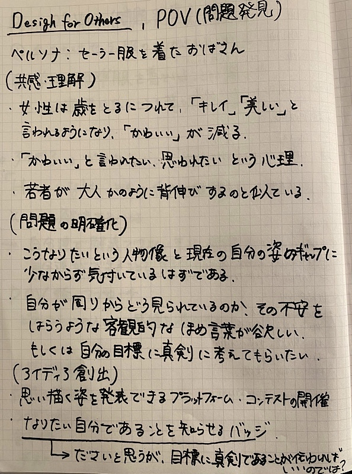
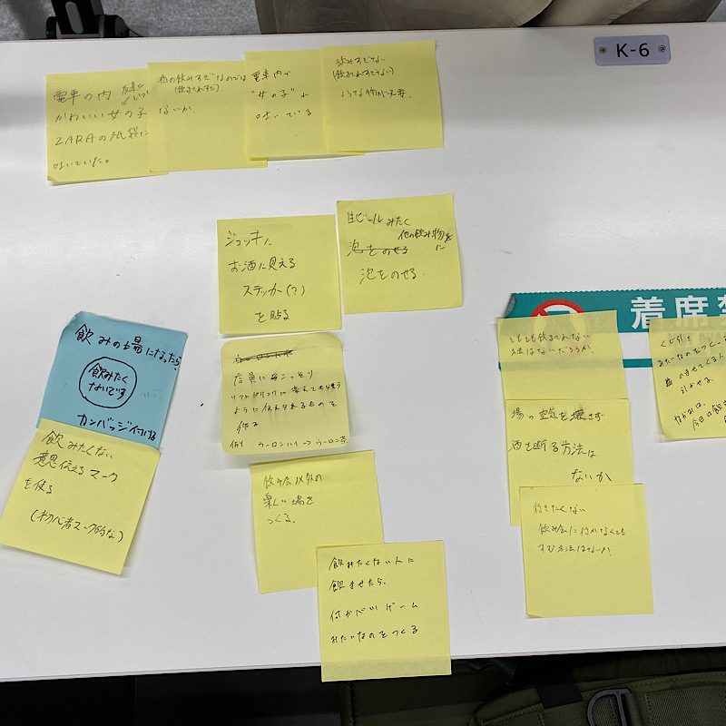
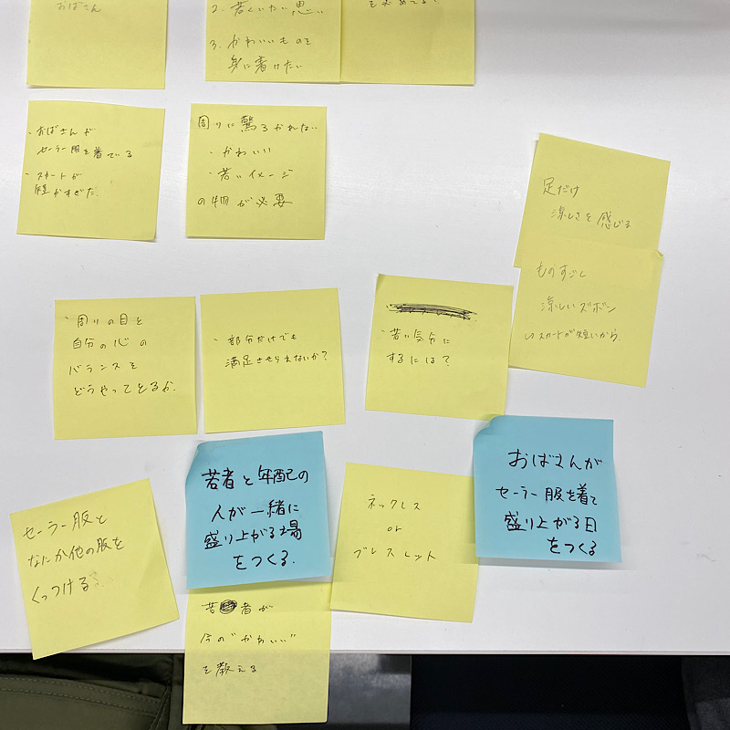
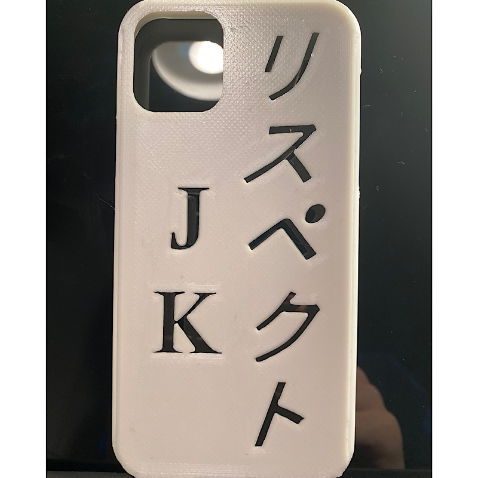
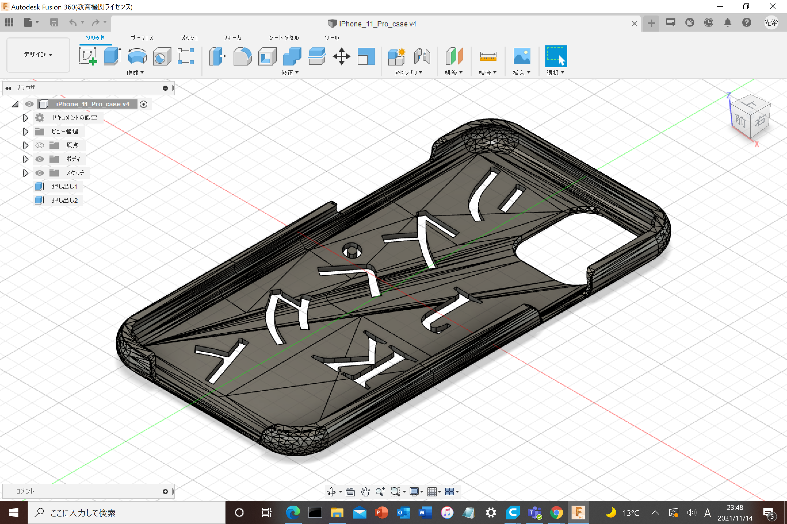

課題：人の感情を満たすものを作ろう（プロトタイプ）
ペルソナ
人物１：電車内で嘔吐する可愛い女の子
人物２：セーラー服を着たおばさん
自分はセーラー服を着たおばさんをターゲットに！
《POVの様子》

《HMVの様子》


プロトタイピング
作品名：リスペクトiPhoneケース
STLファイルは
こちら


《これを作ろうと思った経緯》
女性は年を取るにつれて、「可愛い」から「綺麗」へと誉められ方が変わってくる。
セーラー服を着るということは、「若くありたい」「可愛くありたい」という感情の表れではないかと考えた。
ここには、こうなりたいという人物像を「女子高生」としていることがうかがえる。
このような人物像は私達にも似たものがあるはずである。それは、
推し
である。
私たちは好きな人物の使っているものなどを身に着けたりして、その気持ちを昇華しているのではないかと考えた。
そこには前提として、その人物に対するあふれんばかりのリスペクトが存在する。
リスペクトが伝われば、私たちと同じく、真剣であることが伝わる。
これを視覚的に見せようと試みたのがこの作品だよ
外部の３Dプリントデータを編集可能にする手順
１：thingivers
（外部サイト）のサイトで好きな素材を選択
２：Download All Files をタップ
３：自分のファイルに.zipファイルが保存されていることを確認
４：.zipファイルは解凍しないと使えないので、ファイルを右クリックして、「すべて展開」を選択
５：Fusion360の新規フォルダの上にある、「アップロード」をクリックして、解凍したファイルを移動させる
６：メッシュタグの「修正」を選択
７：「方法」の欄に、円柱のような図形が２つ横並びに出るので、右側の図形を選択
８：完了